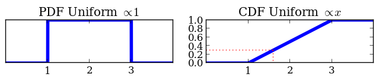
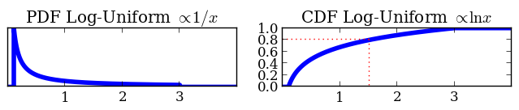

PyMultiNest tutorial
Casual parameter estimation and model selection
Johannes Buchner
Max Planck Institute for Extraterrestrial Physics
November 2013
About me
- implemented MCMC sampler for Bachelor thesis
- since then, 5 years of experience with Monte Carlo methods for Bayesian inference
- Numerical Likelihood functions (0.1-5s), low-dimensional (<20)
- Research on accreting supermassive black hole in X-ray (Poisson spectra)
- Recent interest: smooth field reconstruction with numerical likelihoods (20-500 dimensions)
https://www.mpe.mpg.de/~jbuchner/ -- Johannes Buchner
Go-to Methods
(for numerical likelihoods)
Parameter estimation
- Optimize to maximum (ML/MAP)
- explore around it with MCMC
- High-dimensional, misbehaved: MCMC (?), HMC (?)
-
Model selection
- High-dimensional:
- Low-dimensional:
- Nested models:
Tools so far
(for numerical likelihoods)
Parameter estimation
- Optimize to maximum (ML/MAP)
- explore around it with MCMC
- High-dimensional, misbehaved: MCMC (?), HMC (?)
- Low-dimensional, multi-modal: MultiNest
Model selection
- High-dimensional: give up
- Low-dimensional (<20), multi-modal: MultiNest
- Nested models: AIC + DE
also for Low-dimensional, multi-modal: MultiNest
What will we do today?
Goal: solving integrals
- Write likelihood functions
- Write prior functions
- run nested sampling code
- look at marginal plots and compare evidence
Software: PyMultiNest
- based on MultiNest: written by Farhan Feroz and Mike Hobson (2007)
- Finds clusters -> sampling from ellipses
- Python instead of writing Fortran or C functions
- parses output, and does a bit of plotting
- Also produces "Markov Chain" for uncertainty propagation
Prior functions: A math trick
Based on transforming unit cube:
where is the cumulative distribution of :
- transformation through inverse of CDF
- compresses unimportant regions
- "native units":
- can also do this in MCMC!
Prior functions: A math trick
- Transform from unit cube to parameter space
- Using inverse CDF of prior


def prior(cube, ndim, nparams):
cube[0] = cube[0] * (3 - 1) + 1
cube[1] = 10**(cube[1] * (1 + 0.5) - 1)
Shortest Code Example
import pymultinest
def prior(cube, ndim, nparams):
cube[0] = cube[0] * 2
def loglikelihood(cube, ndim, nparams):
return -0.5 * ((cube[0] - 0.2) / 0.1)**2
pymultinest.run(loglikelihood, prior, n_params=1)
Tutorial
http://johannesbuchner.github.io/pymultinest-tutorial/
$ ssh -Y schoolNN@naf-school01.desy.de
$ bash
$ source /afs/desy.de/group/school/mc-school/setup_pymultinest.sh
$ git clone https://github.com/JohannesBuchner/pymultinest-tutorial
- Example 1: 1d multi-modal problem
- Example 2: Spectral line analysis -- 1 line or 2 lines?
- Example 3: Hierarchical Bayes, Your own, Lighthouse problem, further reading
Final points
- Correlation of parameters from posterior samples SysCorr
- Throw multiple algorithms against problem (jbopt)
- Fully automated model selection, but is model a good one? Systematic errors? Confidence on model choice?
- PyMultiNest reference: Buchner et al (in prep), MultiNest: arXiv:0704.3704, arXiv:0809.3437 & arXiv:1306.2144